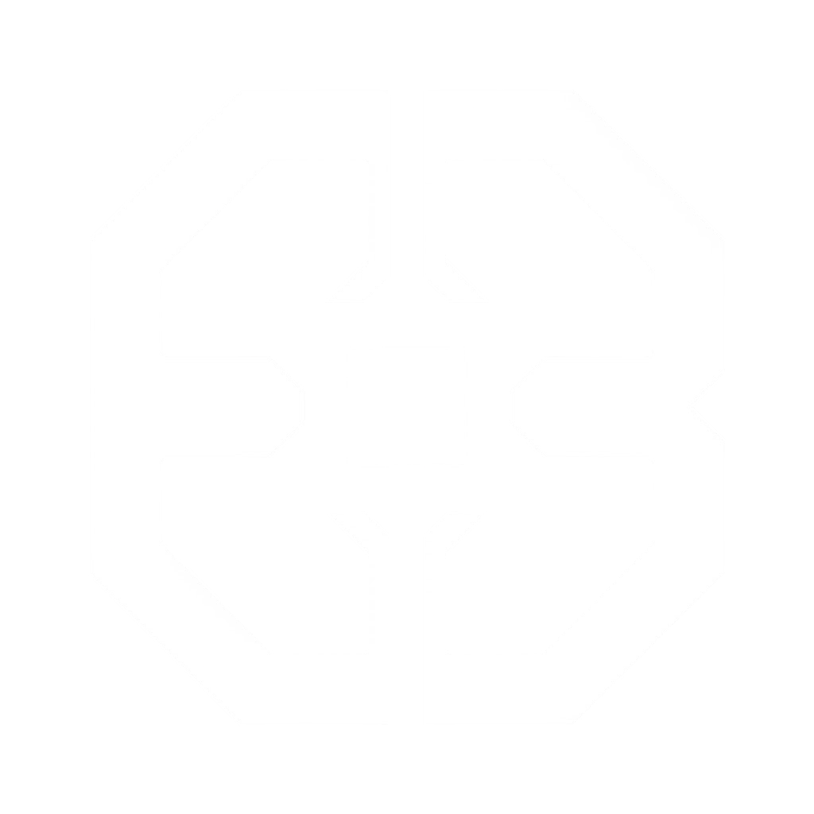

Starting BOZ
Preparing your private market workspace…
First launch takes a little longer. BOZ is still working.
If this does not finish, the desktop log is next to the app data folder.

Preparing your private market workspace…